a. Cấu tạo
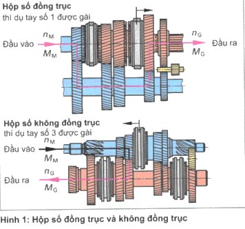
Hình 3.12. Sơ đồ hộp số 3 trục 4 cấp số
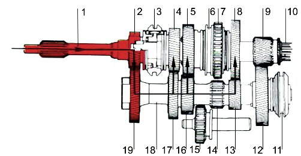
Hình 3.13. Sơ đồ hộp số 3 trục 5 cấp số
1-Trục sơ cấp; 2-Bánh răng liền trục sơ cấp; 3-Khớp đồng tốc gài số 3,4; 4-Bánh răng số 3; 5- Bánh răng số 2; 6- Khớp đồng tốc gài số 1,2; 7- Vành răng số lùi liền khớp 6; 8- Bánh răng số 1; 9- Bánh răng số 5 cố định trên trục thứ cấp; 10- Trục thứ cấp; 11- Khớp đồng tốc gài số 5; 12- Bánh răng quay trơn trên trục 18 (chủ động số 5 ); 13, 14, 16, 17; 19- Bánh răng (liền trục 18); 15-Bánh răng gài số lùi; 18- Trục trung gian.
b. Nguyên lý làm việc
Hộp số của động cơ đặt dọc được sử dụng phổ biến hiện nay là loại hộp số 5 cấp số như minh họa ở hình trên. Sau đây trình bày nguyên tắc hoạt động của một hộp số dọc năm cấp số.
Gài số 1:
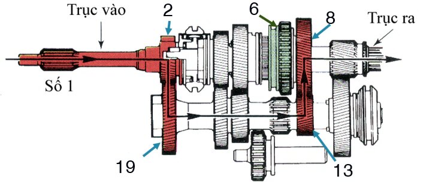
Hình 3.14. Đi số 1
Cắt ly hợp, gạt khớp trượt 6 sang phải cho ăn khớp với vành răng đầu mayơ của bánh răng 8. Tốc độ ra ở cấp số truyền này giảm, mô men tăng. Tỷ số truyền ở tay số 1: $/mathbf{i}_{/mathbf{1}}/mathbf{=}/frac{/mathbf{Z}_{/mathbf{19}}}{/mathbf{Z}_{/mathbf{2}}}/frac{/mathbf{Z}_{/mathbf{8}}}{/mathbf{Z}_{/mathbf{13}}}/mathbf{> 1}$
Gài số 2:
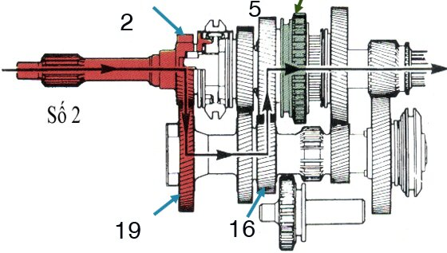
Hình 3.15. Đi số 2
Cắt ly hợp, gạt khớp gài 6 sang trái cho ăn khớp với vành răng đầu mayơ của bánh răng 5. Lúc này trục thứ cấp quay cùng bánh răng 5. Sơ đồ truyền động thể hiện ở hình dưới. Tốc độ ra của cấp số truyền này giảm, mô men tăng. $i_{2} = /frac{Z_{19}}{Z_{2}}/frac{Z_{5}}{Z_{16}} > 1$
Gài số 3
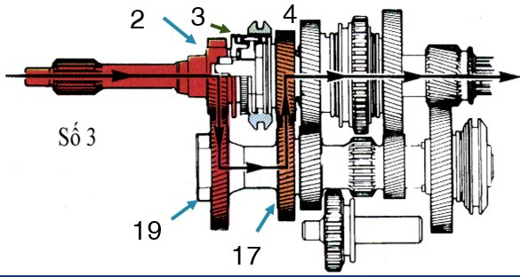
Hình 3.16. Đi số 3
Cắt ly hợp, gạt khớp gài 6 về vị trí trung gian, sau đó gạt khớp gài 3 sang phải ăn khớp với vành răng đầu moay-ơ của bánh răng 4. Lúc này, trục thứ cấp quay cùng bánh răng 4. Sơ đồ truyền động thể hiện ở hình dưới. Tốc độ ra ở cấp số truyền này giảm, momen tăng. $i_{3} = /frac{Z_{19}}{Z_{2}}/frac{Z_{4}}{Z_{17}} > 1$
Gài số 4
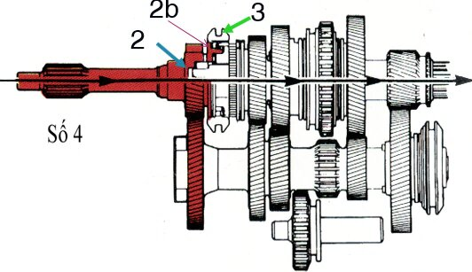
Hình 3.17. Đi số 4
Cắt ly hợp, gạt khớp gài 3 sang trái ăn khớp với vành răng ở đầu trục sơ cấp. Trục thứ cấp có cùng tốc độ và mômen với trục sơ cấp. Tỷ số truyền của số 4 là: i4= 1.
Gài số 5
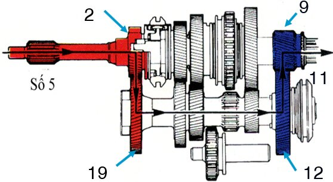
Hình 3.18. Đi số 5
Cắt ly hợp, gạt khớp gài 3 về vị trí trung gian, sau đó gạt khớp gài 11 sang trái ăn khớp với vành răng đầu mayơ của bánh răng 12. Lúc này, bánh răng 12 quay cùng trục trung gian và truyền chuyển động sang bánh răng 9 làm trục thứ cấp quay. Sơ đồ truyền động thể hiện ở hình dưới. $i_{5} = /frac{Z_{19}}{Z_{2}}/frac{Z_{9}}{Z_{12}} < 1$ . nên số 5 gọi là số truyền tăng, tức là trục thứ cấp quay nhanh hơn trục sơ cấp.
Gài số lùi
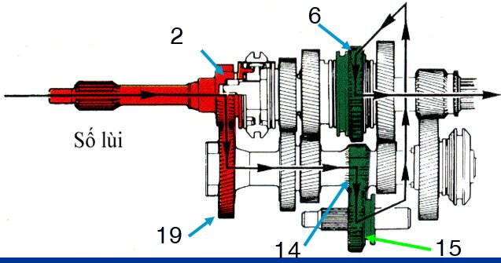
Hình 3.19. Đi số lùi
Ở chế độ này, tất cả các khớp gài số tiến phải nằm ở vị trí trung gian, gạt bánh răng cài số lùi 15 vào vị trí ăn khớp với bánh răng 14 trên trục sơ cấp và vành răng 7 trên khớp gài ở trục thứ cấp. Lúc này, truyền động từ trục trung gian đến trục thứ cấp được thực hiện nhờ 3 bánh răng ăn khớp14 – 15 – 7(không phải 2 như các số tiến) nên làm trục thứ cấp quay theo chiều ngược lại với các trường hợp số tiến.
$i_{R} = - /frac{Z_{19}}{Z_{2}}/frac{Z_{6}}{Z_{14}} < 0$
Hộp số xe Zil 130, 131
Trên ô tô Zil –130, Zil –131 sử dụng loại hộp số cơ khí 3 trục có 5 cấp số tiến, 1 cấp số lùi, số 5 là số truyền thẳng.
Trục chủ động
Trục làm liền với bánh răng chủ động và được lắp quay trên hai ổ bi cầu, một lỗ ở lỗ tâm trục khuỷu và một ổ trên vỏ hộp số. Trên bánh răng có lỗ hướng kính để thoát dầu bôi trơn trong ỗ đỡ đầu trục bị động và mặt côn, vành răng phụ để gài số 5 bằng bộ đồng tốc.
Trục bị động
Trục lắp quay trơn trên một ổ lăn trụ ở lỗ tâm trục chủ động và một ổ bi cầu ở vỏ hộp số. Trên trục có lắp di trượt bánh răng (12) và bộ đồng tốc (4), (9) bằng then hoa, các bánh răng (5), (6), (10) được lắp quay trơn trên trục. Ở các bánh răng (5), (6), (10) có lỗ hướng kính để hứng dầu bôi trơn và vành răng phụ, mặt côn để gài số bằng bộ đồng tốc. Các bộ đồng tốc (4) (gài số 4 –5) và (9) (gài số 2 -3) là loại đồng tốc quán tính chốt dọc trục.
Trục trung gian
Trục lắp quay trơn trên một ổ lăn trụ và một số ổ bi cầu ở vỏ hộp số, bánh răng số 1 được làm liền trục. Các bánh răng (21), (22), (23), (24) được lắp chặt với trục bằng then bán nguyệt.
Loại đồng tốc quán tính hoàn toàn có phần tử khóa dạng chốt dọc trục. Ưu điểm của loại đồng tốc này là kết cấu đơn giản, đảm bảo ra vào số nhẹ nhàng êm dịu.
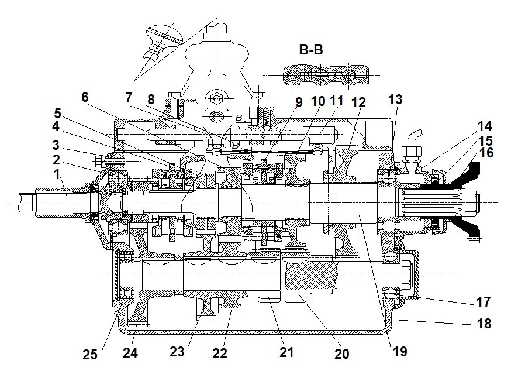
Hình 3.20. Hộp số xe ZIL-131
1-Trục sơ cấp; 2-ổ bi trục sơ cấp; 3-Nắp ổ trục sơ cấp; 4-Đồng tốc số 4 và số 5;5 và 23 - Cặp bánh răng số truyền 4; 6 và 22-Cặp bánh răng số truyền 3; 7-Càng gài số truyền 4 và 5; 8-Càng gài số truyền 2 và 3; 9- Đồng tốc của số truyền 2 và 3; 10-Lò xo định vị; 11-Càng gài số truyền 1 và số lùi; 12- Bánh răng gài số 1 và số lùi; 13-Ổ đỡ trục thứ cấp trên vỏ hộp số; 14 – Lỗ thông hơi; 16- Bích trục truyền các đăng; 17- Ổ đỡ trục trung gian trên vỏ hộp số; 18- Vỏ hộp số (phần đáy các te); 19-Trục thứ cấp (trục bị động); 20-Bánh răng số 1; 21- Bánh răng đi số lùi; 24- Bánh thường tiếp dẫn động cho trục trung gian.
Hộp số xe Gaz 66
Hộp số xe Gaz 66 là hộp số 3 trục, 4 cấp số. Kết cấu hộp số tương tự hộp số xe Zil 130, 131.
Bộ đồng tốc (4) là loại đồng tốc quán tính chốt con chạy.
Các bánh răng lắp đồng trục với bộ đồng tốc trên trục bị động, quay trơn trơn trục. Các bánh răng trên trục trung gian được chế tạo liền với nhau. Trục trung gian được quay trên 2 ổ đỡ nằm ở vỏ hộp số.
Bánh răng di trượt D gài số 1 và số lùi
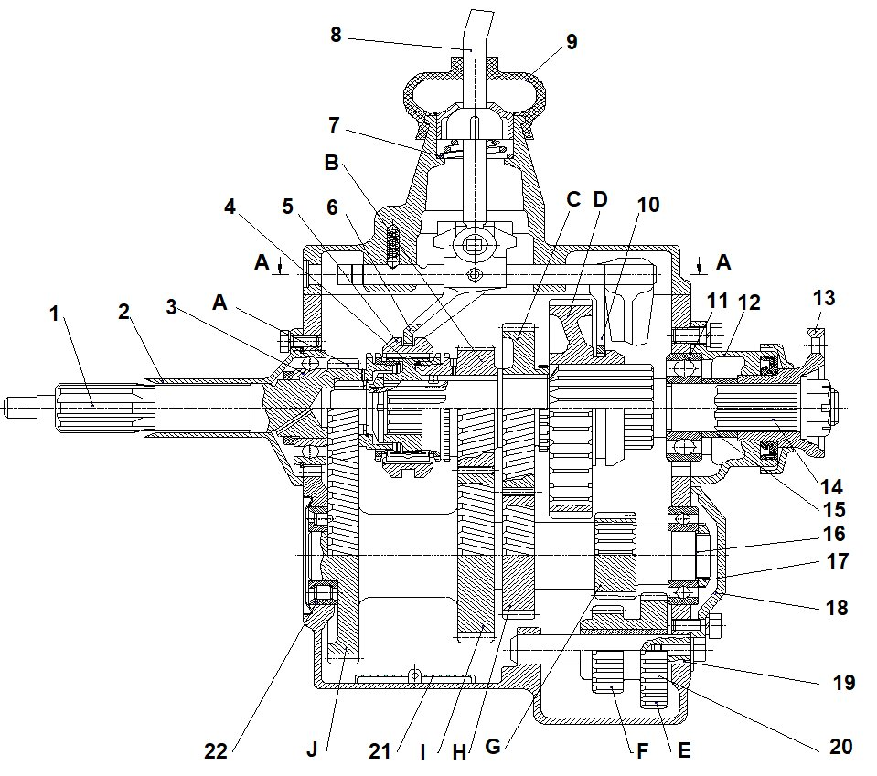
Hình 3.21. Hộp số xe GAZ – 66
1 – Trục sơ cấp; 2 – Nắp ổ; 3 - Ổ bi trục sơ cấp; 4 – Moay ơ đồng tốc; 5 – Khớp đồng tốc; 6 – Càng gạt đồng tốc gài số III và số IV; 7 – Lò xo; 8 – Tay gài số; 9 – Chụp cao su bảo vệ; 10 – Càng gài số I và số II; 11 - Ổ bi trục thứ cấp; 12 – Nắp ổ; 13 – Mặt bích; 14 – Trục thứ cấp; 15 - Ống lót; 16 – Trục trung gian; 17 – Đai ốc hãm; 18 – Nắp ổ; 19 – Trục khối bánh răng số lùi; 20 – Khối bánh răng số lùi; 21 Tấm giữ chất bẩn; 22 - Ổ đỡ trục trung gian
Hộp số xe Ural
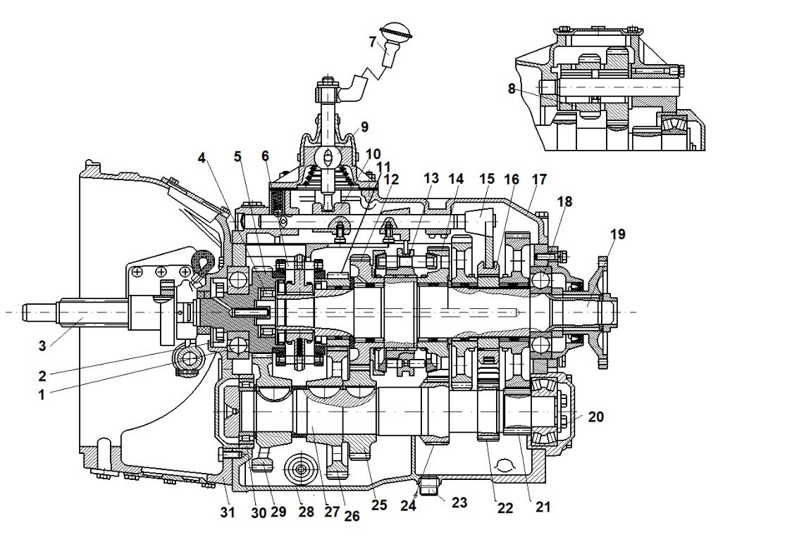
Hình 3.22. Mặt cắt dọc hộp số xe URAL
1 – Ổ bi; 2 – Vòng chặn dầu; 3 – Trục sơ cấp; 4 – Ổ thanh lăn trục; 5 – Bánh răng trục sơ cấp; 6 – Đồng tốc số truyền 4 và 5; 7 – Cần gài số; 8 – Khối bánh răng số lùi; 9 – Chốt tỳ hình cầu của cần gài số; 10 – Càng gài số truyền 2 và 3; 11 - Bánh răng số truyền 5 trên trục thứ cấp; 12 - Bánh răng số truyền 3 trên trục thứ cấp; 13 - Đồng tốc số truyền 2 và 3; 14 - Bánh răng số truyền 2 trên trục thứ cấp; 15 - Bánh răng số lùi trên trục thứ cấp; 16 - Khớp gài số truyền 1 và số lùi; 17 - Nắp vỏ hộp số; 18 - Ổ bi; 19 - Trục thứ cấp; 20 - Ổ thanh lăn trụ; 21 - Bánh răng số truyền II trên trục trung gian; 22 - Bánh răng số lùi trên trục trung gian; 23 - Nút tháo dầu; 24 - Bánh răng số truyền II trên trục trung gian; 25 - Bánh răng số truyền 3 trên trục trung gian; 26 - Bánh răng số truyền V trên trục trung gian; 27 - Trục trung gian; 28 - Vỏ hộp số; 29 - Bánh răng dẫn động trục trung gian; 30 - Ổ thanh lăn trụ; 31 - Vỏ ly hợp.
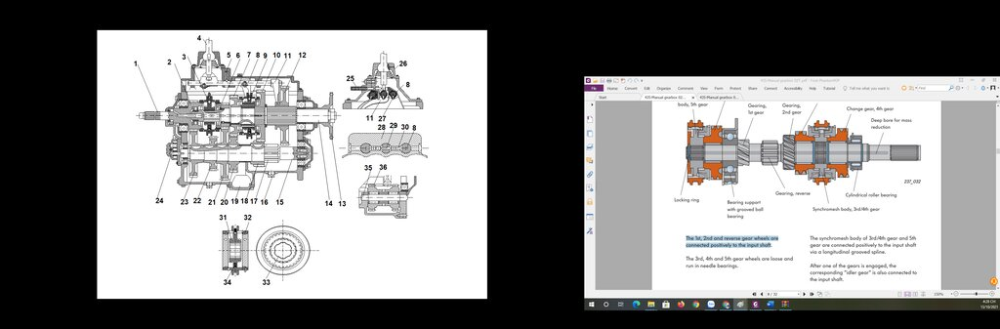
Hình 3.23. Hộp số Kraz 255B
1 - Trục sơ cấp; 2 – Bánh răng chủ động; 3 – Đồng tốc số truyền IV và V; 4 – Cần sang số; 5 – Lò xo định vị; 6 – Bánh răng bị động số truyền V; 7 – Bánh răng bị động số truyền III; 8 – Trục sang số; 9 – Đồng tốc số truyền II và III; 10 – Bánh răng bị động số truyền II; 11 – Nâng gạt bánh răng khi sang số; 12 – Bánh răng bị động số truyền I; 13 – Mặt bích; 14 – Trục thứ cấp; 15 – Trục trung gian; 16 – Nút xả dầu; 17 – Bánh răng trung gian số truyền I; 18 – Bánh răng trung gian số truyền II; 19 – Bộ phận lọc dầu bôi trơn; 20 – Bánh răng trung gian số truyền III; 21 – Bánh răng trung gian số truyền V; 22 – Bánh răng trích công suất; 23 – Bánh răng trung gian; 24 – Bơm dầu bôi trơn; 25 - Nạng gài số I và số lùi; 26 – Lò xo định vị cần sang số; 27 – Chốt; 28 – Nắp hộp số; 29 – Chốt khóa hãm; 30 – Bi khóa hãm; 31 – Vành răng bộ đồng tốc; 32 – Vành ma sát bộ đồng tốc; 33 – Rãnh then hoa; 34 – Lò xo định vị; 35 – Trục số lùi; 36 – Cụm bánh răng số lùi
Hộp số nhiều cấp số (10 cấp số)
Để tăng số cấp số của hộp số, ở một số loại hộp số được bố trí kết hợp giữa hộp số chính và hộp số phụ (hộp chia). Hộp số phụ có thể được đặt phía trước hộp số chính, hoặc được đặt phía sau hộp số chính.
Trong sơ đồ a hộp số chính là hộp số 3 trục có 5 cấp số tiến và một cấp số lùi, hộp số phụ có 2 cấp số, kết hợp tạo thành hộp số có 10 cấp số tiến và 2 cấp số lùi. Trong sơ đồ b hộp số chính là hộp số 3 trục có 5 cấp số tiến và một cấp số lùi, hộp số phụ có 2 cấp số, kết hợp tạo thành hộp số có 10 cấp số tiến và 2 cấp số lùi.
Hộp số nhiều cấp thường được sử dụng trên các loại ô tô vận tải có tải trọng trung bình và lớn, vì các loại ô tô này có tải trọng luôn thay đổi và có đặc tính động lực kém nên cần phải có nhiều cấp số truyền hơn.
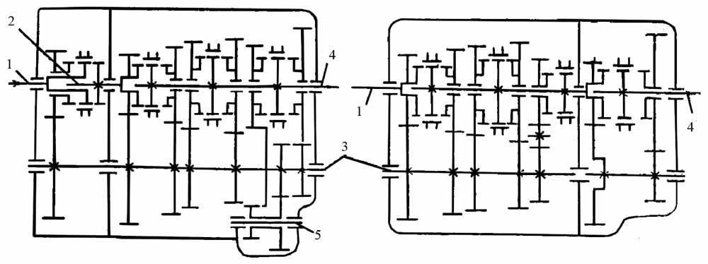
Hình 3.24. Sơ đồ hộp số 10 cấp số
1-Trục chủ động, 2-Trục chủ động của hộp số chính, 3-Trục trung gian, 4-Trục bị động, 5-Trục số lùi.
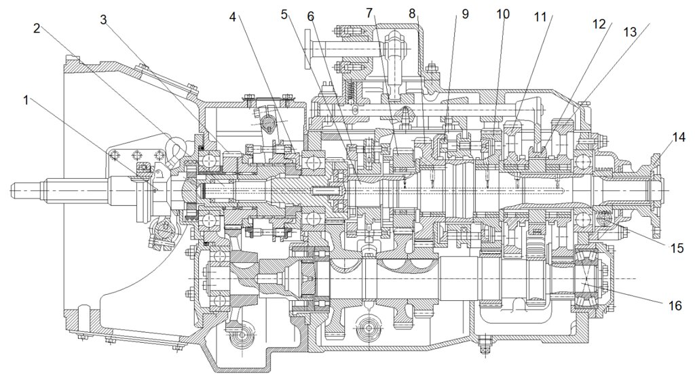
Hình 3.25. Kết cấu hộp số KAMAZ 5320
1 – Trục vào bộ chia số; 2 – Trục vào hộp số chính; 3 – Bánh răng số truyền tăng bộ chia số; 4 – Vành răng số truyền thẳng bộ chia số; 5 – Trục bị động; 6 – Đồng tốc số IV và số V; 7 – Bánh răng số truyền IV; 8 – Bánh răng số truyền III; 9 – Đồng tốc số II và III; 10 – Bánh răng số truyền II; 11 – Bánh răng số truyền I; 12 - Ống gài số I và số lùi; 13 – Bánh răng số lùi; 14 – Mặt bích lắp trục các đăng; 15 – Vít đo tốc độ; 16 – Trục trung gian